🌋 Aventura dos Vulcões 🌋
Explore os vulcões mais incríveis do mundo e faça experimentos seguros!
🗻 Vulcões Mais Famosos do Mundo
Clique em cada vulcão para descobrir curiosidades incríveis!
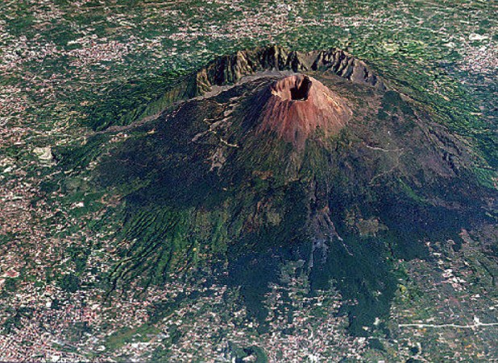
Monte Vesúvio
📍 Itália
O vulcão que destruiu Pompeia em 79 d.C. Ainda está ativo e é um dos vulcões mais perigosos do mundo!
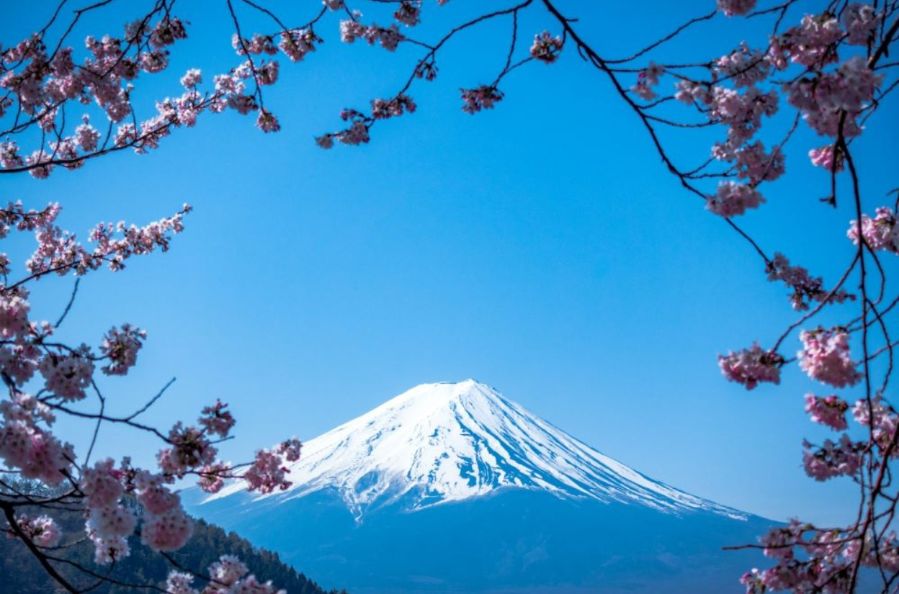
Monte Fuji
📍 Japão
O símbolo do Japão! Com 3.776 metros de altura, é considerado sagrado e atrai milhões de visitantes.
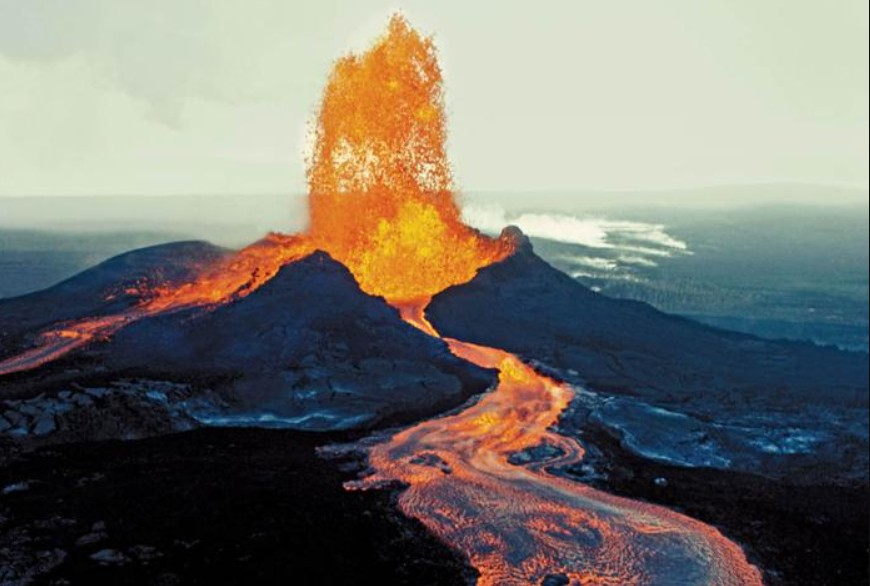
Kilauea
📍 Havaí, EUA
Um dos vulcões mais ativos do mundo! Suas erupções criam novas terras e são um espetáculo da natureza.
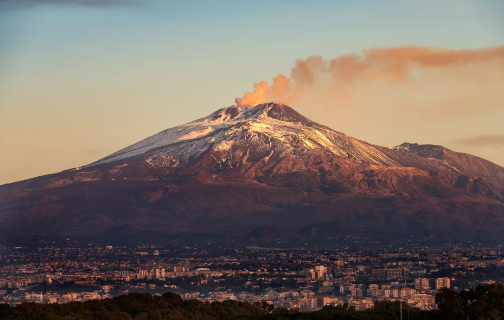
Monte Etna
📍 Sicília, Itália
O vulcão ativo mais alto da Europa! Suas erupções iluminam o céu noturno de forma espetacular.
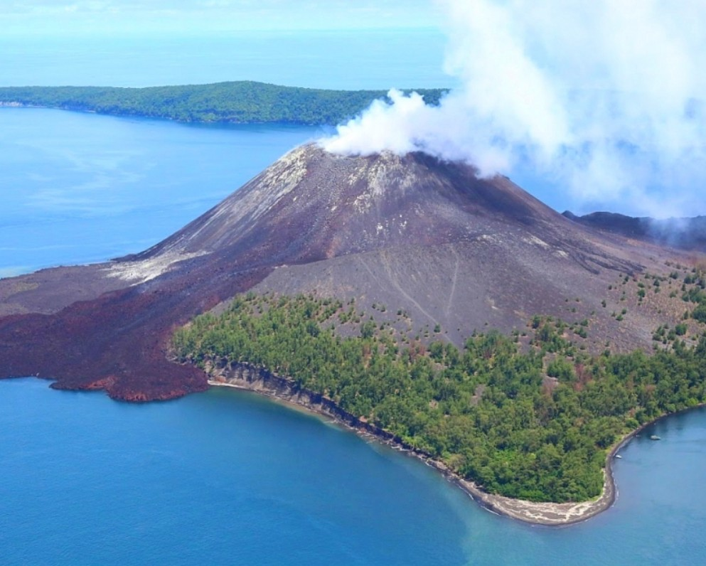
Krakatoa
📍 Indonésia
Famoso pela erupção de 1883, uma das mais poderosas da história! O som foi ouvido a 4.800 km de distância.
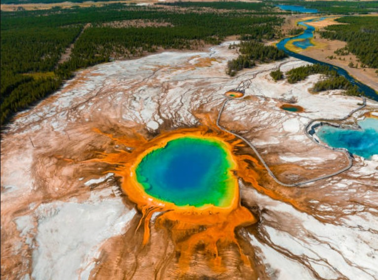
Yellowstone
📍 EUA
Um supervulcão! Suas fontes termais e gêiseres são alimentados por uma gigantesca câmara de magma.
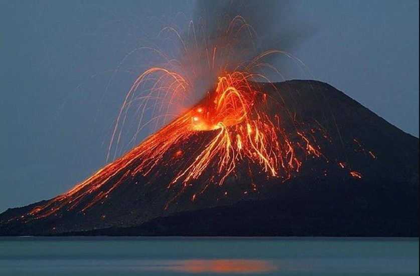
Stromboli
📍 Itália
Conhecido como "Farol do Mediterrâneo"! Suas erupções constantes iluminam o mar há milhares de anos.
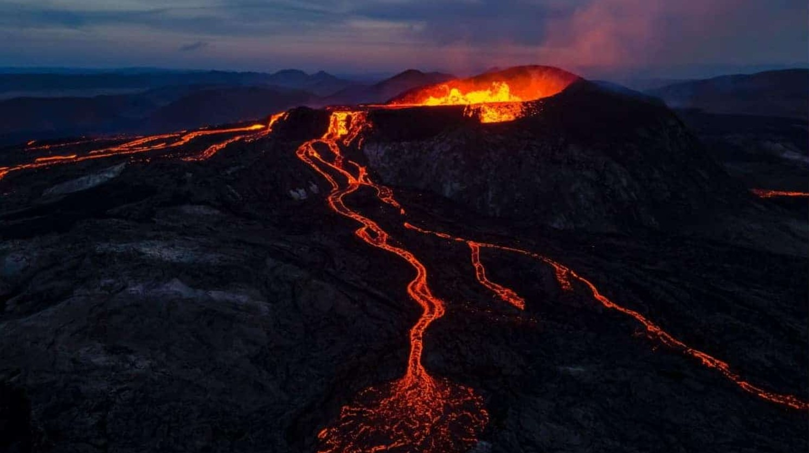
Mauna Loa
📍 Havaí, EUA
O maior vulcão do mundo em volume! Tão grande que ocupa metade da Ilha Grande do Havaí.
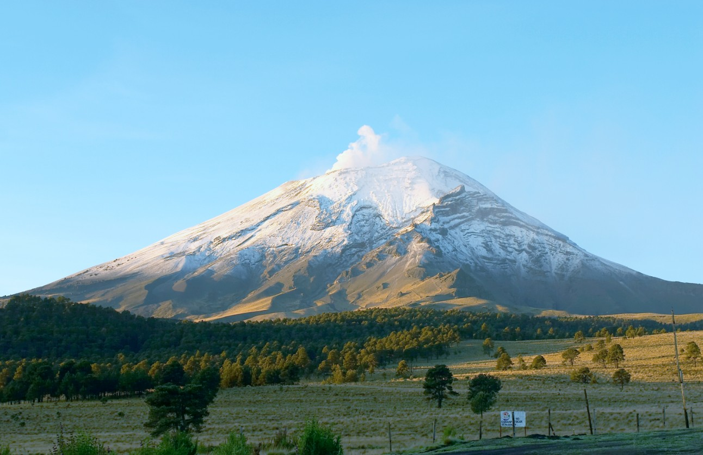
Popocatépetl
📍 México
Chamado de "Popo" pelos mexicanos! Seu nome significa "montanha que fuma" em náhuatl.
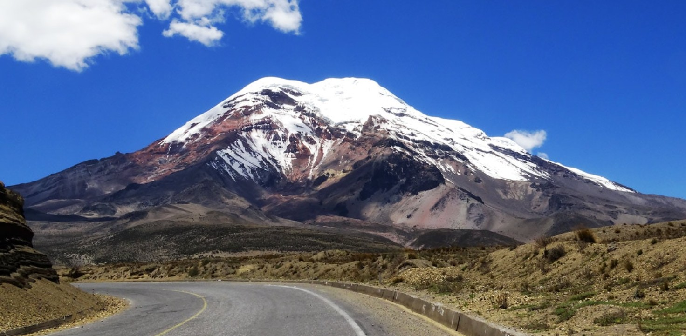
Cotopaxi
📍 Equador
Um dos vulcões ativos mais altos do mundo! Sua forma cônica perfeita é coberta de neve eterna.
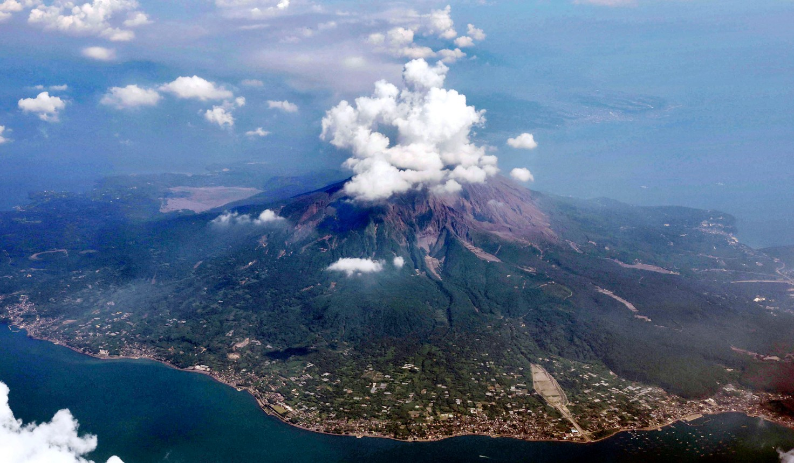
Sakurajima
📍 Japão
Erupta quase todos os dias! As pessoas da cidade vizinha convivem com suas pequenas explosões diárias.
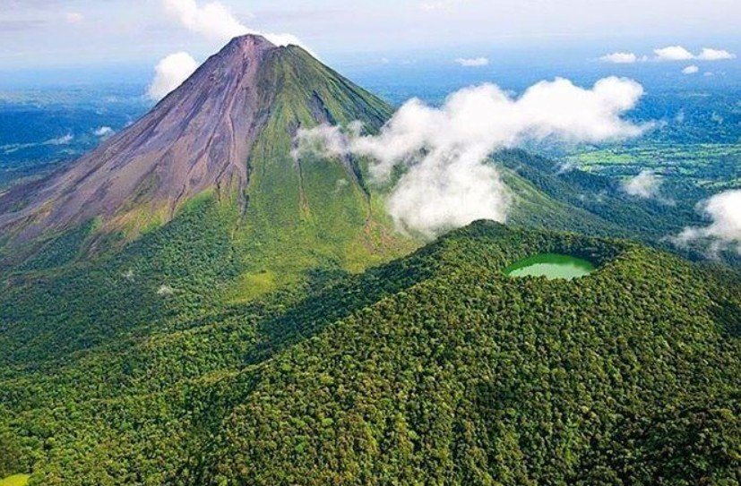
Arenal
📍 Costa Rica
Famoso por sua forma cônica perfeita! Fica no meio de uma floresta tropical cheia de vida.
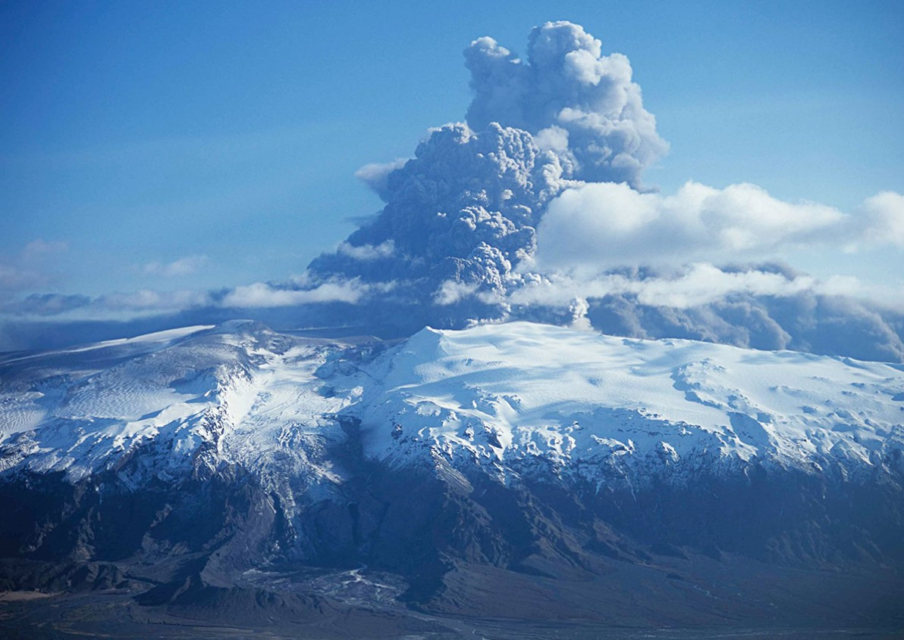
Eyjafjallajökull
📍 Islândia
O vulcão com o nome mais difícil! Em 2010, suas cinzas pararam aviões no mundo todo.
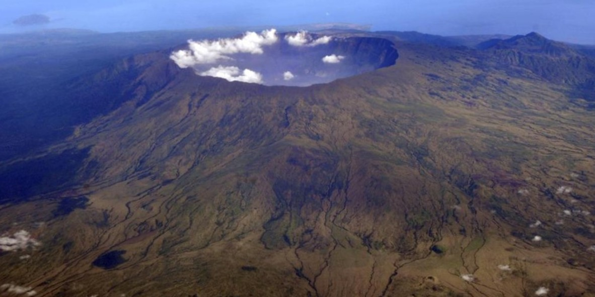
Monte Tambora
📍 Indonésia
Causou o "ano sem verão" em 1815! Sua erupção mudou o clima mundial por anos.
🧪 Laboratório de Vulcões
Crie sua própria erupção vulcânica misturando ingredientes seguros!
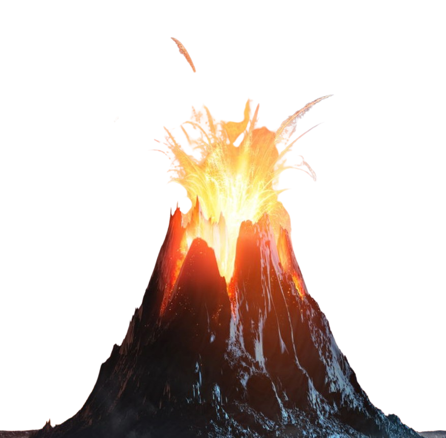
Bicarbonato de Sódio
A base da nossa reação química!
Corante Alimentar
Para dar cor à nossa lava!
Detergente
Cria espuma e bolhas incríveis!
Vinagre
O ácido que causa a erupção!
🔬 Como Funciona a Ciência:
Quando o bicarbonato de sódio (base) se mistura com o vinagre (ácido), acontece uma reação química que produz gás carbônico. Esse gás cria pressão e faz a mistura "explodir" para fora, simulando uma erupção vulcânica real!
🧠 Quiz dos Vulcões
Teste seus conhecimentos sobre vulcões!